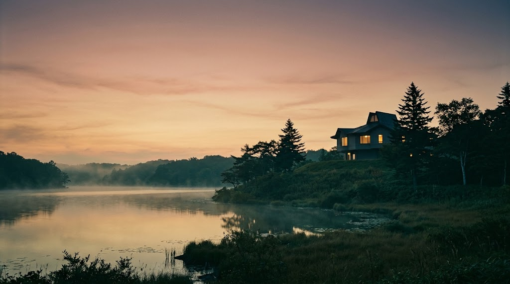
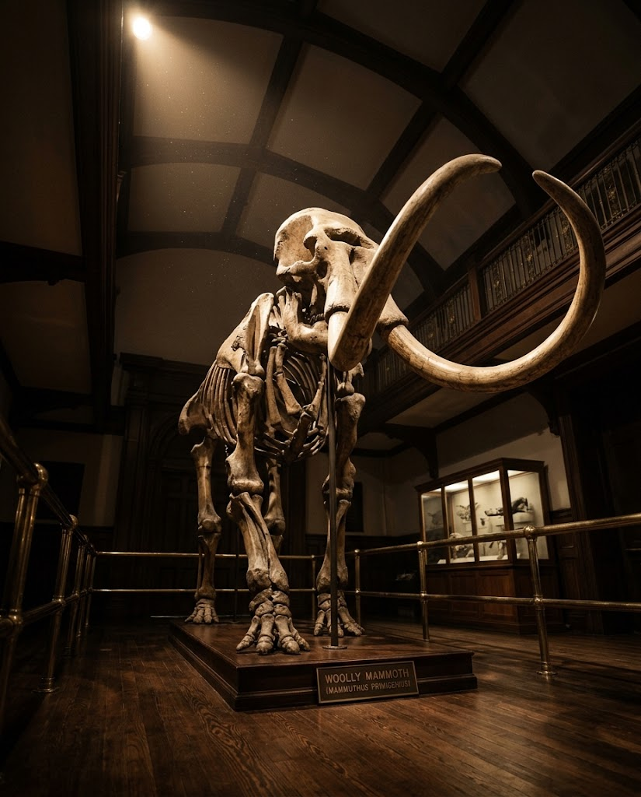
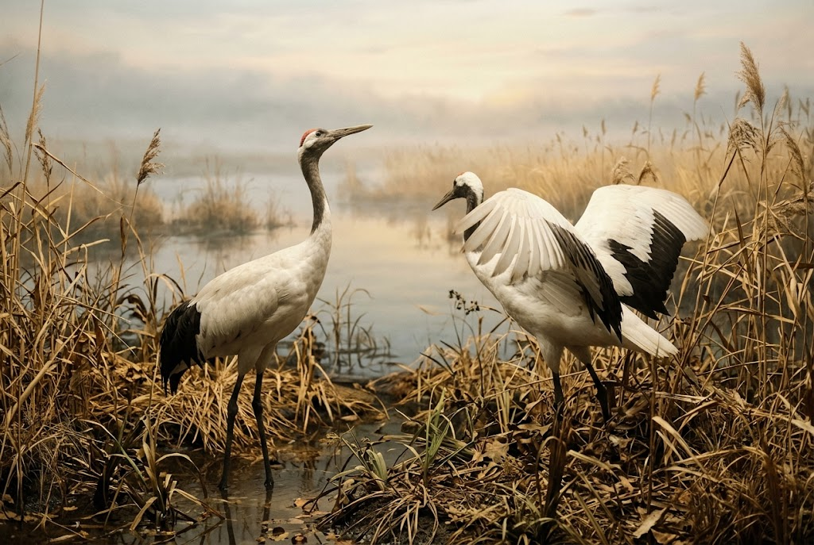

1F
釧路の自然
釧路湿原や阿寒湖、陸上動物から海洋動物、昆虫まで。剥製や標本が並び、シロナガスクジラの顎骨は圧巻です。

History
1936年7月14日、釧路市役所の水道建設事務所2階の一角で「釧路市立郷土博物館」として歩みを始めました。
地域の自然史と人文史の調査研究を礎に、豊かな自然、歴史、アイヌ文化、産業の遺産を守り伝える施設へ。地域文化の振興と、市民が学べる場をつくりたいという願い、そして多くの先達や研究者の協力が、今日の充実した展示を築いてきました。


Highlights
入口で来館者を迎えるのは、迫力あるマンモスの骨格レプリカ。時を超えた巨躯の前に立てば、展示を巡る旅がはじまります。
標本や展示で北海道東部の自然と生態系を豊富に紹介。国の天然記念物・春採湖を望む高台という立地も、この館ならではの魅力です。
Exhibition
釧路湿原や阿寒湖、陸上動物から海洋動物、昆虫まで。剥製や標本が並び、シロナガスクジラの顎骨は圧巻です。
アイヌ以前の先史時代の土器類から、明治以降の暮らしを伝える民具まで、土地の記憶をたどります。
アイヌに関する展示と、湿原の象徴タンチョウの展示。湿原に降り立ったような感覚のタンチョウドームがあります。
Voices
★★★★☆フロアごとに展示のテーマがありました。アイヌ文化を勉強したくてまわっています。今回はアイヌの展示物を見せていただき良かったです。一階の剥製達はとても見応えがありました。北海道のことも色々と勉強できました。入る前は期待感ゼロでしたが、入ってみると楽しく勉強できました。
★★★★★マンモスのお出迎えで受付をします。一階は釧路の自然、二階は釧路の歴史、三階はアイヌに関する展示と釧路湿原の象徴タンチョウの展示です。中でもシロナガスクジラの顎骨は圧巻。タンチョウドームでは湿原に降り立ったような感覚になれます。全体的にとても濃い内容の博物館でした。
Information
| 施設名 | 釧路市立博物館 |
|---|---|
| 住所 | 北海道釧路市春湖台1-7 |
| 電話番号 | 0154-41-5809 |
| 定休日 | 月曜・火曜 |
| メール | museum@city.kushiro.lg.jp |
| 公式サイト | https://www.city.kushiro.lg.jp/museum/ |